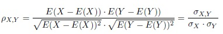
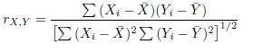

Pearson's Product-Moment Correlation Coefficient
The Pearson product-moment correlation coefficient, often called Pearson's r, is a measure of the linear dependence between two random variables. Pearson's r is defined as the covariance between two random variables divided by the product of the standard deviations of the random variables. Thus the population correlation coefficient is defined as

The sample correlation coefficient can then be calculated by

The Pearson product-moment correlation coefficient will always be between -1 and 1. The closer the value is to either -1 or 1 the more highly correlated the two variables. A correlation coefficient equal to either -1 or 1 indicates a perfect linear relationship between the two variables. A correlation coefficient close to 0 simply indicates that the two variables are not linearly related, however they still may be highly correlated in a nonlinear sense.
For example, suppose that X takes on the integer values between -50 and 50 with equal probability. Furthermore, let Y be equal to the square of X. Then the Pearson product-moment correlation coefficient will be equal to 0. Oftentimes people take this to mean that X and Y are not correlated. This conclusion is clearly not true as we know that Y is completely determined by X. Thus we can only say that X and Y are not linearly correlated. This rather vague conclusion is one of the disadvantages of using the Pearson correlation coefficient.
-- ErinEsp - 01 Jan 2011